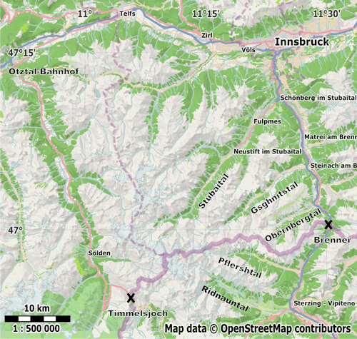

Нами рассматривались три варианта заброски к главному хребту Штубайских Альп: с итальянской стороны в долины Ridnauntal, Pflershtal либо в долину Gsghnitstal c австрийской стороны (рис. map). Чтобы добраться до Ridnauntal либо Pflershtal из Вероны необходимо доехать на региональном поезде (предоставляется компанией Trenitalia) до города Sterzing (ит. Vipiteno) и пересесть там на пригородный автобус. В долину Ridnauntal ходят автобусы 312 маршрута, в Pflershtal – 313. Автовокзал, от которого отправляются автобусы, находится в северной части города. При этом автобус 312 делает остановку около ж.д. станции, 313-й автобус уходит сразу на север и около станции не останавливается. Расписание и маршрут следования автобусов следует уточнять на сайте транспортной компании южного Тироля.
В долину Gsghnitstal следует автобус из поселка Steinbach am Brenner (номер рейса и расписание движения следует искать на сайте компании VVT), до которого можно добраться на пригородной электричке из Инсбрука, либо от перевала Brenner (ит. Brennero). Указанная электричка предоставляется компанией ÖBB. Из Вероны до перевала Brenner следует региональный поезд.
Удобным вариантом для заброски/выброски является долина Stubaital, добраться до которой из Инсбрука можно на автобусе №590, предоставляемом компанией VVT. Автобус делает несколько остановок в южной части долины – наиболее близкой к главному хребту, которые являются подходящими точками для начала либо завершения маршрута.
В процессе разработки маршрута рассматривался вариант выброски через город Зёльден. Чтобы добраться из Зёльдена в Инсбрук, необходимо доехать на автобусе до станции Ötztal-Bahnhof, на которой надо пересесть на пригородный поезд до Инсбрука.
Вариант заброски к остановке Pass Museum (пер. Timmelsjoch) был отброшен, поскольку требовал "всего лишь" 4-х пересадок между различными видами общественного транспорта по пути из Вероны.
Потенциально удобным вариантами заброски/выброски является долина Obernbergtal, однако данный вариант нами рассмотрен не был.

Рис. map. Карта дорог в Штубайских Альпах